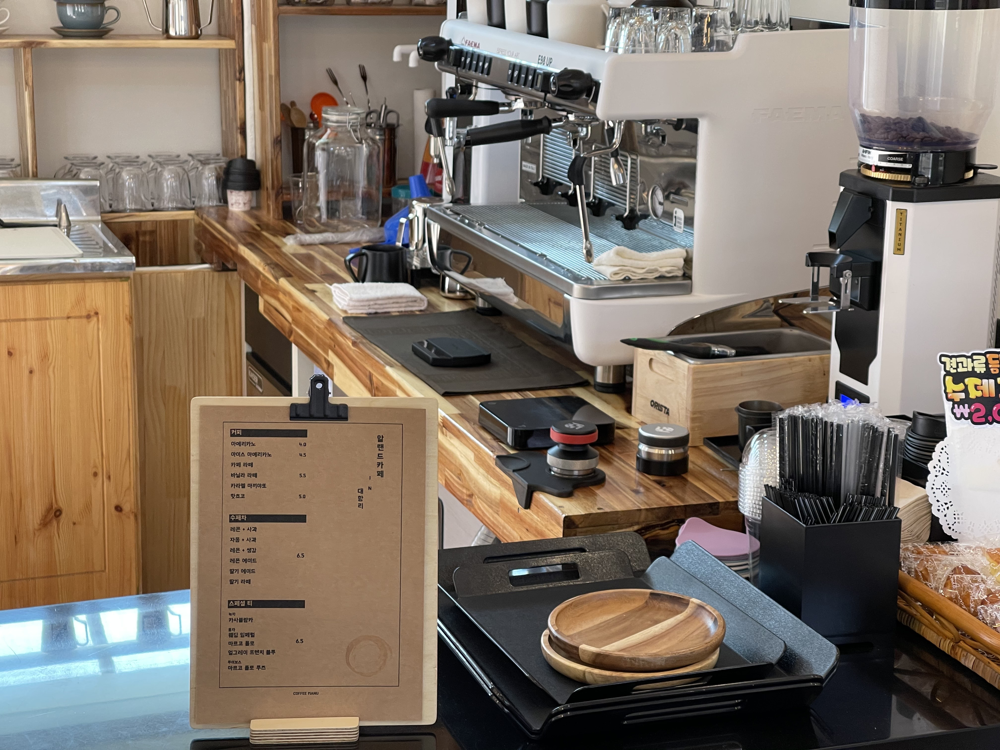

-
직접 만든
과일청을 맛보세요. -
신선한 과일과 알랜드만의 레시피로
과일향의 풍미를
충분히 느낄 수 있는 수제청을 드셔보세요 
-
우리가 구운
수제쿠키를 만나보세요. 
-
신선한 버터 그리고 견과류를
이용해 바삭함을 더해 매일마다
직접 구운 맛난 쿠키를 만나보세요.
-
다양한 로스팅으로
다채로운 맛을 느껴보세요. -
콜롬비아산의 상큼한 맛, 과테말라
산의 풍미
를 그 외에 5가지 이상의 다채로운 원두의 맛을 느껴보세요. - 
알랜드 주변의
명소를 찾아보세요.
알랜드 주변에는 30곳이 넘는 힐링장소에서
맛나는 커피와 경치로 힐링을 해보세요.